Plateau where the
Earth’s History Slumbers
3
Observe the map (Fig 3.1). Identify the physiographic division
marked in it.
In the last two chapters you have familiarised with the major physiographic
divisions in India as well as the physical and cultural diversities of Himalayan
mountains and the North Indian Plain.
Fig 3.1
MAP NOT TO SCALE
Page 53
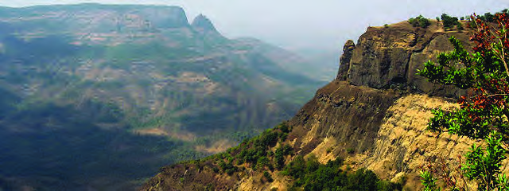

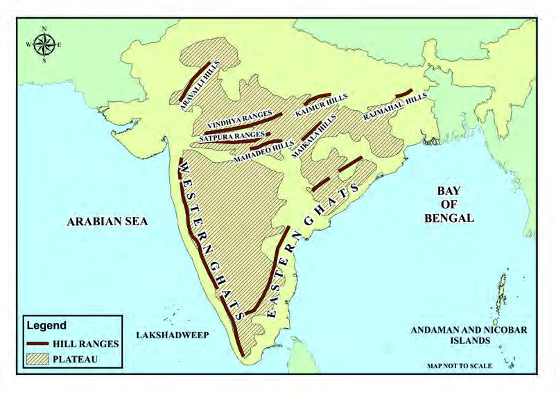
Page 54


54
Part I
Social Science II
It is estimated that this almost triangular-shaped physiographic
unit occupying major share of the Peninsular India is at an
average altitude of 600 to 900 metres above mean sea level.
This unique physical division in terms of physical diversities
such as extensive table lands with bordering mountain ranges
and hills, comparatively shallow river valleys and diverse
flora and fauna, is known as the Peninsular Plateau. The
name is based on the fact that this division holds the major
share of the Peninsular India. The Peninsular Plateau is one
of the oldest landforms in the world. Let’s have a detailed
overview of the largest physical division of India, namely, the
Peninsular Plateau, its physical diversities, resource base and
their influence on the human life in India.
What is a Plateau?
Plateaus are the relatively flat and very extensive landforms
situated at comparatively higher elevation from the
surroundings. There are three types of plateaus based on their
location:
Intermontane plateaus
Piedmont plateaus
Continental plateaus
Try to get more information and examples regarding these
plateaus.
With the help of the map given (Fig 3.1), identify the states
which wholly or partly belong to the Peninsular Plateau. You
can also make use of the political map of India.
Madhya Pradesh
Maharashtra
Page 55
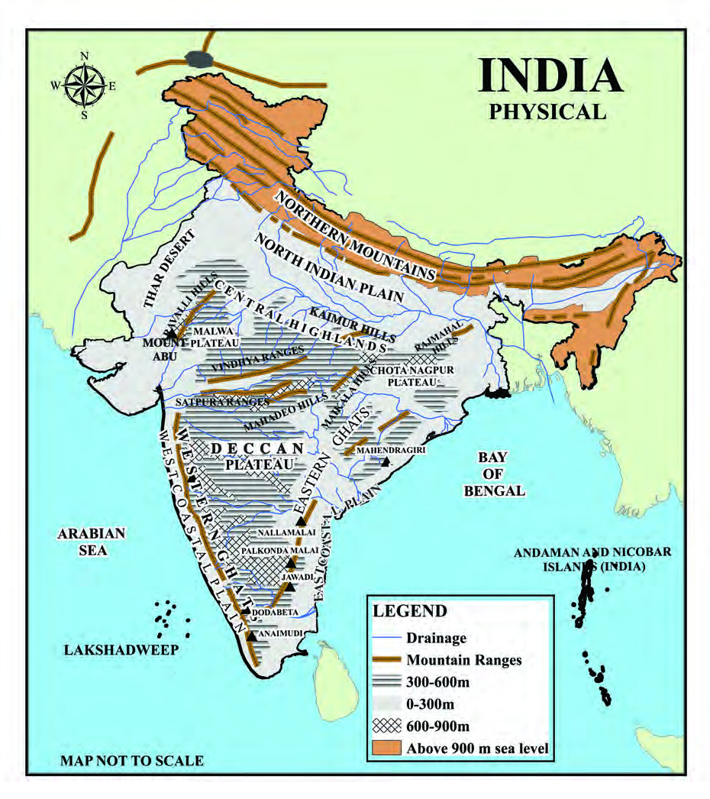

55
Plateau where the earth’s history slumbers
Standard IX
Fig 3.2
Page 56
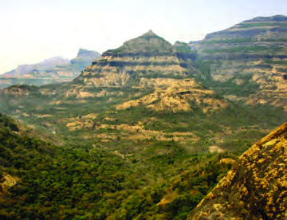

56
Part I
Social Science II
Fig 3.3
Deccan Plateau: a view
The Peninsular Plateau lies south of the North Indian Plain
bordered by the Western Ghats in the west and the Eastern
Ghats in the east. This landform extending over 16 lakh sq.km
in area can be generally classified into two, based on it's
location.
i. The Deccan Plateau
ii. The Central Highlands
Deccan Plateau
Deccan Plateau is the extensive plateau to the south of the
Satpura ranges between the Western Ghats and the Eastern
Ghats. Satpura ranges, Maikala ranges and the Mahadeo Hills
form the northern boundary of Deccan Plateau.
The term ‛Deccan’ has been derived from the Sanskrit word
‛Dakshin’, meaning ‛the South’.
Observe the location and the extent of the Deccan
Plateau from the map (Fig 3.2).
The Deccan Plateau is made up of crystalline rocks, like basalt,
granite and gneiss, formed by the lava flows millions of years
ago.
The north western part of the Deccan Plateau is composed of
lava rocks called basalt. This region is called as Deccan Trap.
The black soil formed by the weathering
of basalt rocks is the peculiarity of this
region. This soil is also known as Regur
soil. Being highly fertile and with more
water - retaining capacity, it protects the
agricultural crops even in summer. This
soil is also called as black cotton soil, as
it is very useful for cotton cultivation.
Minerals like lime, iron, magnesium and
aluminium are characteristics of regur
soil. From the map (Fig. 3.1) you can
locate the Western Ghats and the Eastern Ghats which form
the boundaries of the Deccan Plateau.
Page 57
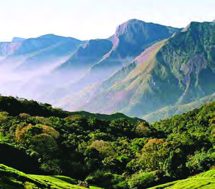


57
Plateau where the earth’s history slumbers
Standard IX
You have learned about the Shayadri
mountain ranges along the east of
Kerala. This mountain range has a
decisive influence on our climate,
biodiversity and life of people (Fig 3.4).
This mountain range, extending for about 1600 km from
Kanyakumari in the south to the state of Gujarat in the north, is
commonly known as Western Ghats. This range is the western
edge of the Deccan Plateau. The height of this range gradually
increases from north to south. Anamudi (2695 metres), the
highest peak in Peninsular India, is located in Anamalai of the
Western Ghats (Fig. 3.5).
Fig 3.4
Sahyadris: a view
Fig 3.5
Anamudi
In which state is
Anamudi located?
The Western Ghat ranges, known as Anamalai and Elamalai
in Kerala, is called as the Nilgiris in Karnataka and Tamilnadu,
and the Sahyadris, in Maharashtra. Dodabetta (2637 metres)
in Nilgiris of Tamil Nadu is another major peak in this region.
Analyse the impact of
Sahyadris on the life of
the people of Kerala and
prepare a note.
Find the exact location of
Anamudi and include it in
My Own Atlas.
Find out the major peaks in the Western Ghats.
Page 58


58
Part I
Social Science II
Most of the peninsular rivers that have considerable influence
on the culture and human life in Peninsular India originate
from the Western Ghat ranges.
Look at the map (Fig. 3.2). Haven't you noticed the mountains
like Javadi Hills, Palkondamalai, Nallamalai and Mahendragiri
marked in this? These hill ranges which are comparatively
lower in height than the Western Ghats form the Eastern
Ghats. The total extent of the Eastern Ghats is about 800 km
from the Mahanadi banks in Odisha to the Nilgiri ranges in
Tamil Nadu. The east-flowing peninsular rivers cut across the
Eastern Ghats, breaking the continuity of these ranges and
flow over the eastern coastal plains. The Western Ghats and
the Eastern Ghats join at the Nilgiri Hills.
Central Highlands
Central Highlands are the extensive plateau region that lies to
the north of Satpura ranges. The Aravali mountains are on the
western margin of this table land known as Malwa Plateau.
The Aravali ranges is an example for old fold mountains or
residual mountains worn down by long term erosion. Mount
Abu, a major hill station, is in Aravali ranges. Mount Abu is
also the highest peak in Malwa Plateau.
Which are the peninsular rivers cutting across the Eastern
Ghats?
Locate the major mountain ranges of the Eastern Ghats and
include them in My Own Atlas.
Locate the Nilgiri Hills and incorporate in My Own Atlas
Locate Mount Abu and incorporate it in My Own Atlas.
Which is the tributary flowing directly to River Ganga
from the Central Highlands? Find out with the help of a map.
Find out the tributaries of River Yamuna originating from the
Central Highlands.
Page 59
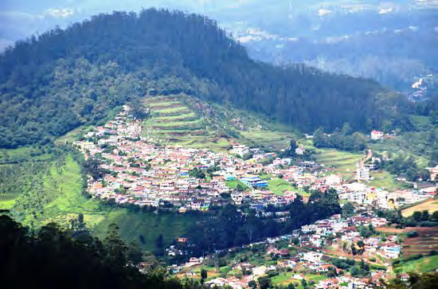


59
Plateau where the earth’s history slumbers
Standard IX
The plateau region along the eastern
part of the Central Highlands is
the Chota Nagpur Plateau. This
plateau, situated at the south of
Rajmahal Hills is the richest store
house of minerals.
Metallic minerals such as iron ore,
bauxite, manganese and copper
and non - metallic minerals such as
lime stone and coal make this region
mineral rich. The major economic
activities in this region are mining
and mineral-based industries.
The mountain ranges along the meeting
place of Tamil Nadu, Karnataka and
Kerala are known as the Nilgiri Hills.
Hill stations such as Ooty, Kotagiri and
Coonor are the main attractions of this
region belonging to the Western Ghats.
Ooty (Udhagamandalam), known as
the Queen of Hills, is one of the major
hill stations in South India. Beautiful
and extensive meadows, temperate
vegetation, cool and pleasant climate,
tea plantations, commercial vegetable
farming and pollution-free environment
make the Nilgiris more attractive. The
Nilgiris, with its rich biodiversity, is the
first Biosphere Reserve in India.
The Nilgiris
Climatic Diversity in
Peninsular Plateau
Peninsular Plateau generally experiences tropical monsoon
climate. But there is considerable spatio-temporal variation
in temperature and rainfall. Have a look at the major factors
influencing the climate of Peninsular Plateau.
Tropical location
Peculiar shape of the Peninsula
Distance from the ocean
Orientation of mountain ranges
Direction of Monsoon winds
Locate the Chota
Nagpur Plateau and
incorporate it in My
Own Atlas.
Page 60


60
Part I
Social Science II
Barring the mountain region, the
average summer temperature in
the Peninsular Plateau is more than
30 Degree Celsius. Temperature
at the Deccan Plateau generally
touches 38 Degree Celsius in
March. Generally low temperature
prevails at higher elevations in the
Western Ghats.
The diurnal range of temperature
is very high along the interiors of
the plateau due to the considerable
fall in the night temperature.
Diurnal range of temperature
is the difference between the maximum temperature and
minimum temperature recorded at a particular place in a day.
Rainfall is moderate or scanty throughout the Peninsular
Plateau except the western slopes of the Western Ghats.
During the southwest monsoon season the moisture - laden
winds, raised and condensed along the western slopes of the
Western Ghats cause heavy rainfall along the windward side.
The west coast and the western slopes of the Western Ghats
receive 250 to 400 cm rainfall during this period. The winds
descending along the eastern slopes of the Western Ghats
being dry, the plateau regions situated close to the eastern
slopes receive very less amount of rainfall (less then 50cm).
Such regions are termed as rain shadow regions.
Try to understand the daily temperature characteristics of places
like Hyderabad, Nagpur, Bengaluru, Mysuru etc.
Cool climate prevails over the places such as Ooty, Kodaikanal
and Wayanad in spite of being located at the tropical region.
Why?
Plateau Outside the Peninsula!!
Yes, it has been ascertained that the regions
composed of metamorphic rocks, such as
marble, slate and gneiss, at Jaisalmer in
Rajasthan are part of the Peninsular Plateau.
Studies also reveal that the Meghalaya
Plateau region was originally part of the
Peninsular Plateau which was later separated
by geomorphic processes. The rock outcrops
along the Kachchh and Kathiawar regions
in Gujarat have also been found to a part of
Peninsular Plateau.
Page 61

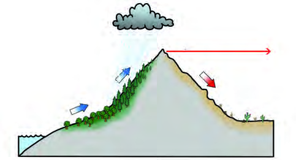


61
Plateau where the earth’s history slumbers
Standard IX
The
southwest
monsoon
winds
reaching
the
Maharashtra coast enter the
peninsula through Narmada
and Tapti river basins and
cause moderate amount of
rainfall throughout Central
India. Chota Nagpur Plateau
also receives a small amount
of rainfall during this period.
Peninsular Plateau generally
experiences
dry
climate
during the northeast monsoon
or retreating monsoon season.
Though the low pressure
whirls developed over the
Bay of Bengal causes heavy
showers along the east coast,
especially Tamil Nadu and
Andhra Pradesh, the plateau
remains unaffected.
Peninsular Rivers
A cross section of the Peninsular Plateau is represented in the diagram
(Fig. 3.6).
Fig 3.6
Western Ghats
West
West Coastal
Plain
Arabian Sea
Bay of
Bengal
Peninsular Plateau
East
Eastern Ghats
East Coastal
Plain
What is the reason for the very scanty of rainfall in the interior
parts of Tamil Nadu and Karnataka during southwest monsoon?
Rain Shadow Regions
Moisture-laden winds from the sea rise along
the windward sides of mountains. The air rising
in this manner condenses to form rain-bearing
clouds and causes heavy rainfall along the
windward sides. But the leeward sides generally
remain rainless as the descending air along these
slopes is dry. Such regions are called as rain
shadow regions.
Windward
Side
Rising air condenses
to form rain-bearing
clouds
Sea
Leeward
Side
Region of rain shadow
Dry Air
Evaporation
Warm, moist
air
This representation is only for the purpose of
conceptual clarity. Nor according to scale.
Page 62


62
Part I
Social Science II
Catchment Area: The defined area from where the water flows into
a river is termed as the catchment area of the river.
Drainage Basin: The area formed by a river and its tributaries is
called a Drainage Basin.
Water Divide: The boundary line separating two watersheds or
drainage basins is called Water Divide.
Haven't you noticed that the general slope of the Peninsular
Plateau is from west to east? The highest part in this plateau is
the Western Ghats. The Western Ghats is the major water divide
in Peninsular India. The Western Ghats, the mountain ranges
of the Central Highlands and the Aravali ranges extending up
to the Delhi ridges, divides the peninsular drainage into three:
The peninsular rivers flowing eastwards into the Bay of
Bengal
The Peninsular rivers flowing westwards into the Arabian
Sea.
Rivers that flow northwards to join Yamuna and Ganga.
East-flowing Peninsular Rivers
Most of the east-flowing peninsular rivers originate from the
Western Ghats.
The rivers Mahanadi, Godavari, Krishna and Kaveri and
their tributaries cut across the Peninsular Plateau and flows
eastwards through the eastern coastal plain to join the Bay of
Bengal.
Familiarise with the important facts related to these rivers
from the given table (Table 3.1).
Identify the major east-flowing peninsular rivers and incorporate
in My Own Atlas.
Page 63
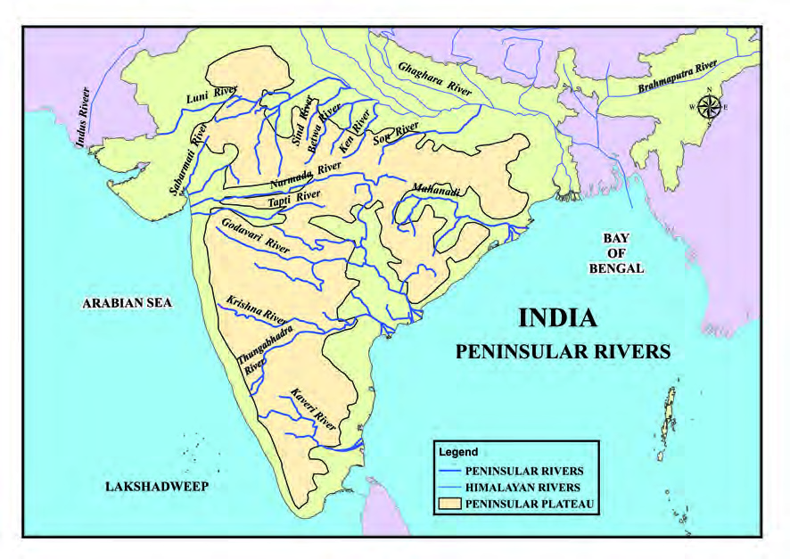

63
Plateau where the earth’s history slumbers
Standard IX
River
Source
Major Tributaries
States sharing the
River Basin
Mahanadi
Sihawa in Raipur
(Chattisgarh)
Ib, Tel
Chattisgarh, Odisha,
Madhya Pradesh
Godavari
Nashik in
Maharashtra
Pranhita,
Indravati, Sabari
Maharashtra,
Madhya Pradesh,
Andhra Pradesh
Krishna
Mahabaleshwar in
Maharashtra
Tungabhadra,
Bhima, Koyna
Maharashtra,
Karnataka, Andhra
Pradesh
Kaveri
Brahmagiri Hills in
Karnataka
Kabani, Bhavani,
Amaravati
Karnataka,
Tamilnadu, Kerala
Table 3.1
Fig 3.7
Chambal River
Page 64


64
Part I
Social Science II
There has been a long standing dispute
existing between the South Indian states
of Karnataka, and Tamil Nadu over
the sharing of Kaveri river water. The
state of Karnataka argued that the pre-
Independence agreement (1924) on the
sharing of river water should be declared
invalid as it was more favourable to the
Madras Presidency. According to Tamil
Nadu, changes in the earlier agreement
would affect millions of farmers in
Tamil Nadu. The Central Government
appointed a tribunal in 1990 to study
the case. In the final verdict issued
in 2007, an agreement was arrived at
regarding the sharing of Kaveri water.
Accordingly, it was decided to give 419
TMC water to Tamil Nadu, 270 TMC
water to Karnataka, 30 TMC water to
Kerala and 7 TMC water to Puducherry
Union Territory.(1TMC=1000 million
cubic feet). The dispute is not settled
yet. The reconsideration petitions of the
states are still pending before the court.
Kaveri Dispute
Godavari is the largest peninsular
river. This river having 1465 km
length and with 3.13 lakh sq. km
catchment area, is also called
Dakshin Ganga. Rivers, Krishna
and Kaveri are the second and the
third largest peninsular rivers.
Peninsular
rivers
are
more
seasonal in their flow. The water
flow decreases during summer
and overflows during monsoons.
West-flowing Peninsular Rivers
Most of the peninsular rivers, except Narmada and Tapti,
originate from the western slopes of the Western Ghats and
swiftly flow into the Arabian Sea through the western coastal
plains. Rivers Narmada and Tapti originate from the uplands
in Central Highlands.
Find out the
tributaries of River
Kaveri originating
from Kerala.
As compared to other peninsular rivers, the water flow in River Kaveri does
not experience any significant decrease in flow throughout the year. This is due
to the fact that the catchment area receives southwest monsoon rains during
summer and northeast monsoon rains in winter.
Perennial Kaveri
Page 65


65
Plateau where the earth’s history slumbers
Standard IX
River
Source
Major
Tributaries
States holding
the river basin
Narmada
Amarkantak
(Madhya Pradesh)
Hiran, Banjar
Madhya Pradesh,
Maharashtra,
Gujarat
Tapti
Multai
(Madhya Pradesh)
Purna, Girna
Madhya Pradesh,
Maharashtra,
Gujarat
Fig 3.8
Duandar Waterfalls
Steep valleys carved in marble rocks,
Duandar Waterfalls near Jabalpur
and Sardar Sarovar Multipurpose
River Valley Project make Narmada
stand tall above others. Familiarise
with the important facts related to
the rivers Narmada and Tapti from
Table 3.2 given below.
Narmada Bachao Andolan
Narmada Bachao Andolan was a strong public resistance against the construction of large
reservoirs on River Narmada. This was ignited by the concern that a number of large
and small dams including the Sardar Saraovar and Narmada would cause harm to the
environment and lead to the displacement of people. This agitation was jointly led by
the local tribal communities, farmers, environmentalists and human rights activists. The
abeyance of construction activities of this project from 1994 to 1999, and the withdrawal
of investors including the World Bank and also a rethinking on this project may be
considered as the outcome of this movement.
Table 3.2
Find out the major rivers that originate from the Western
Ghats and flow to Arabian Sea through Kerala.
Page 66
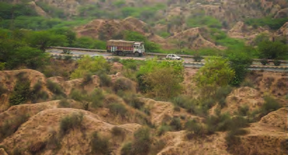


66
Part I
Social Science II
Peninsular rivers are being harnessed in many ways to promote irrigation,
power generation and tourism. Let’s familiarise with a few multi-purpose
river valley projects in the Peninsular India. Observe Table 3.3 given below.
River Valley Project
River
State
Hirakud
Mahanadi
Odisha
Thungabhadra
Thungabhadra
(Tributary of Krishna)
Karnataka
Sardar Sarovar
Narmada
Gujarat
Krishna Raja Sagar
Kaveri
Karnataka
Nizam Sagar
Godavari
Andhra Pradesh
Chambal Ravines
The gullies that are formed by the
continuous erosion by Chambal River
and its tributaries are a distinctive
topographical feature of the region.
Such badland topographical features
along the northern slopes of Malwa
Plateau are known as Ravines.
Fig 3.9
Ravines
Peninsular Rivers joining River Ganga
In the previous chapter, you learned about some rivers
originating from the Malwa Plateau flowing northward either
to join River Yamuna or directly to River Ganga.
Chambal
These rivers are termed as peninsular tributaries of River
Ganga.
Table 3.3
Peninsular rivers are, in general, not navigable. Why?
Page 67
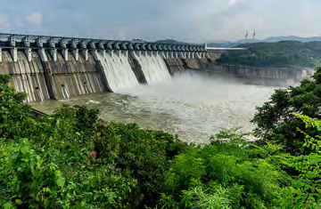


67
Plateau where the earth’s history slumbers
Standard IX
Fig 3.10
Sardar Sarovar Dam
What are Multipurpose River Valley
Projects?
Multipurpose River Valley projects
are projects that construct dams across
a river for serving different purposes
simultaneously. Flood control, irriga-
tion, hydel-power generation, inland
water transport, fishing and tourism
are some of the main objectives of such
projects.
Natural Vegetation in the Peninsular Plateau
The natural vegetation of a region is in accordance with the
physiography and climate of that region. Let’s see what are
the major natural vegetation types in the Peninsular plateau.
Tropical Deciduous Forests
These are the most widespread natural forests in the
Peninsular Plateau. Such vegetation is generally confined to
the regions receiving 70 to 200 cm of annual rainfall. Based on
the availability of rainfall, these are of two types:
Moist deciduous forests
Dry deciduous forests
Moist deciduous forests are found in areas receiving 100 to 200
cm annual rainfall. The type of vegetation commonly found
along the eastern slopes of the Western Ghats are of this type.
This type of vegetation is also seen along the hills of Madhya
Pradesh and Chattisgarh as well as in the Chota Nagpur. Teak,
Sal, Shisham, Mouva, Sandalwood etc. are common in these
forests.
Collect more information about multipurpose river valley
projects.
Find out such river valley projects in Peninsular India.
Page 68

68
Part I
Social Science II
In-situ Soils and Transported Soils
In-situ soils are the soils that rest over the place at which they are formed.
Example: Black soil
The soils carried away by rivers, wind etc. and deposited somewhere else are
called Transported soils.
Example: Alluvial soil
Dry deciduous forests are confined to the other parts of
Peninsular Plateau receiving 70 to 100 cm of annual rainfall.
It gives way to thorn forests and shrubs as we move closer
to the areas with scanty rainfall. With the onset of droughts,
these trees completely shed their leaves and the forests turn to
grasslands having leafless trees. Teak, rosewood, axle wood,
bamboos etc are common here.
Tropical Thorn Forests
This type of vegetation is common along the regions with
high temperature and an annual rainfall below 75 cm. Short
trees are seen here and there. Acacia, euphorbia, date palms, a
few varieties of grass etc are the common ones. The semi-arid
regions of Maharashtra and Karnataka to the east of Western
Ghats, and the dry regions of Andhra Pradesh, Telangana and
Tamil Nadu have this type of vegetation.
Southern Montane Forests
The vegetation along the higher reaches of the plateau such
as the Western Ghats, Vindhya ranges, the Nilgiri Hills etc
are generally included in the category of southern montane
forests. The places situated above 1500 metres have temperate
vegetation, below which sub-tropical vegetation is seen.
The sub tropical vegetation along the Nilgiris, Palani, Anamalai
etc are called as Shola forests.
Soil Types in Peninsular Plateau
Most of the soil types found in the Peninsular Plateau are in-
situ soils. The soils found here can be classified as black soil,
red soil, laterite soil and mountain forest soils.
Page 69
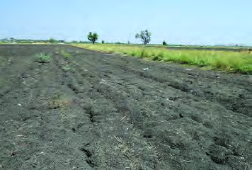
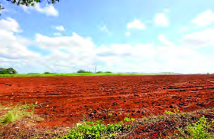
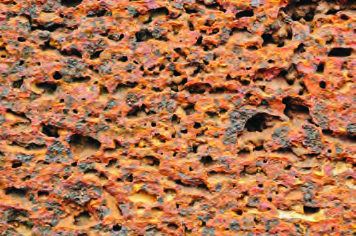

69
Plateau where the earth’s history slumbers
Standard IX
Fig 3.11
Black Soil
Fig 3.12
Red Soil
Fig 3.13
Laterite Soil
Black Soil
You know that the northwestern part of
the Deccan Plateau is a vast lava plateau.
Black soils are formed as a result of long-
term weathering of lava rocks called
basalt in this region.
Black soils are found mainly in the states
of Maharashtra and Madhya Pradesh and
partly in Karnataka, Telangana, Andhra
Pradesh, Gujarat and Tamil Nadu.
What are the other names by which these soils are known?
Red Soil
Red soil is formed by the weathering of
very old crystalline metamorphic rocks
of the Peninsular Plateau. Even though
it is called as red soil in general, in some
places, it also appears in brown, grey and
yellow colours. The red colour is mainly
due to the presence of considerable
quantity of iron in this soil.
Laterite Soil
Laterite soil is formed as a result of
leaching of minerals such as silica and
lime from the soil at places experiencing
alternating periods of heavy rain and
drought. In the Peninsular Plateau,
laterite soil is mainly found along the
Western Ghats, the Eastern Ghats,
Rajmahal Hills, Vindhya and Satpura
mountains and Malwa Plateau. Being
less fertile, this soil is generally not
arable, but through fertilisation it is
used extensively for plantation crops
such as tea, coffee, rubber and arecanut.
Page 70
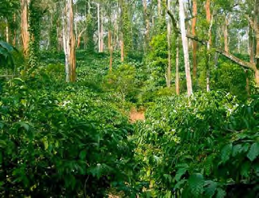

70
Part I
Social Science II
Fig 3.14
Coffee Plantation
Mountain Soil
In South India, mountain soil is seen along the Western and
the Eastern Ghats. This soil is suitable for the plantation crops,
especially tea, coffee, spices and tropical fruits in Karnataka,
Tamil Nadu and Kerala.
Other than the above discussed soils, in accordance with the
physiography and climate, there is a wide variety of regional
soil types in Peninsular Plateau.
Agriculture in Peninsular Plateau
Even though the plateau regions are generally not suitable for
agriculture when compared to the plains, crops such as rice,
wheat, cotton, sugarcane and tobacco as well as plantation
crops such as tea and coffee are being cultivated in different
parts of the Peninsular Plateau. Agriculture is possible only
in selected regions due to the constraints such as undulating
topography, fluvial eroded surface soil, steep slopes, thin top
soil, exposed rocks and a few scattered hills.
Plantation crops dominate in the Western Ghats. Tea and coffee
plantations are quite common in the Nilgiris. But paddy is also
being cultivated here by making hill
terraces.
Coffee: Karnataka is the leading
producer of coffee in India. The state
owns about 59 percentage of the
coffee plantations and 71 percentage
of coffee production in India. Kerala,
with 22 percentage of production,
stands second. Rich varieties of
coffee such as Arabica and Robusta
are mainly cultivated.
Page 71
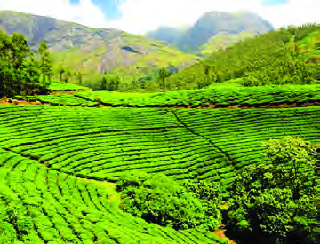
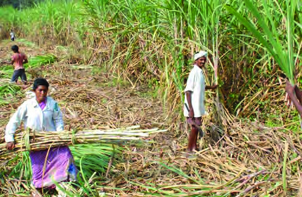
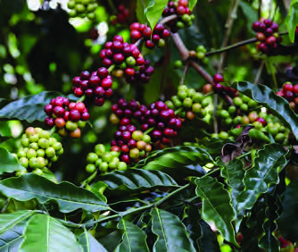


71
Plateau where the earth’s history slumbers
Standard IX
Fig 3.15
Tea Plantation
Fig 3.16
Sugarcane Plantation
The Seven Coffee Seeds that made History
Coffee cultivation in India was started by the
latter half of 17th century. It was Bababudan, a
Muslim priest, who brought seven coffee seeds
from Arabia and started coffee cultivation in
the hill ranges of Chikamagaluru in Karnataka.
This region, which is the birth place of Indian
coffee, is known as Bababudan Hills. Coffee
plantations and coffee industries developed
further since the British rule.
Tea: The tea plantations in the plateau
are mainly confined to the Nilgiri Hills
and the Western Ghats spread over
Tamil Nadu, Karnataka and Kerala. The
region stands out with 44 percentage of
the plantations and 25 percentage of the
total production in India. Being labour-
intensive, the sector provides a lot of
employment opportunities, both in
plantations and in the allied industries.
Sugarcane:
The
most
favourable
condition for sugarcane cultivation
persists in the Deccan Plateau region
even though the Northern Plains
dominates in the area of cultivation.
Let’s see the favourable conditions here.
Black lava soil in the Deccan Plateau
Tropical climate and long crushing
season
Comparatively high sucrose content
in the tropical variety of sugarcane
Which is the largest sugarcane producing state in India?
Page 72
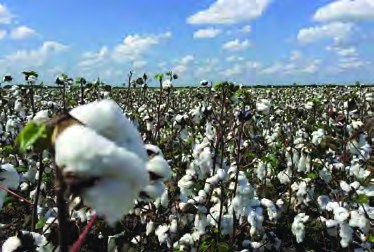
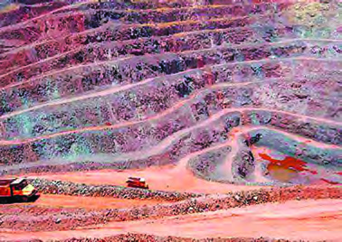
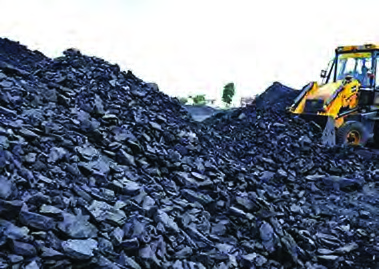

72
Part I
Social Science II
Fig 3.17
Cotton Plantation
Fig 3.18
Iron Ore Mine
Fig 3.19
Coal Mine
Cotton: Even though cotton is a
Kharif crop, the cotton cultivation
in Peninsular India begins by the
month of October and is harvested
from January to May. This is because
it is essential to have seven frost free
months in the early growing period.
Cotton requires 21 Degree Celsius to
30 Degree Celsius of temperature and
50 to 100 cm annual rainfall. But cotton
is also cultivated in low rainfall areas
with the help of irrigation. The black
soil in the Deccan-Malwa Plateau regions is the most suited
for cotton cultivation. Gujarat is the leading producer in India,
followed by Maharashtra.
Storehouse of Minerals
Mineral resources in India are largely concentrated in the
crystalline rock layers and the lower hilly tracts of Peninsular
Plateau. Chota Nagpur Plateau is termed as the heartland of
minerals. The Chotanagpur-Odisha Plateau which spreads
over Jharkhand, West Bengal and Odisha, is the richest mineral
belt in India. This region is rich in metallic and non-metallic
minerals such as coal, iron ore, manganese, mica, bauxite and
copper. Based on the availability of mineral resources, the
Peninsular Plateau can be divided as different mineral zones:
Page 73


73
Plateau where the earth’s history slumbers
Standard IX
1. Northeastern Plateau Region
The Chotanagpur- Odisha plateau region is the largest mineral
belt. This region spreads over Jharkhand, West Bengal and
Odisha. Minerals such as coal, iron ore, manganese, mica,
bauxite and copper are being mined in this region.
2. Central Region
Minerals such as manganese, bauxite, limestone, marble,
coal, mica, iron ore and graphite are largely obtained from
the central region which spreads over Chattisgarh, Madhya
Pradesh, Telangana, Andhra Pradesh and Maharashtra.
3. Southern Region
Minerals such as iron ore, bauxite and lignite are seen along
this region which spreads over the Karnataka Plateau and the
adjoining parts of Tamil Nadu.
4. Southwestern Region
Iron ore, clay etc. are largely obtained from this region which
spreads over western Karnataka and Goa.
5. Northwestern Region
The Aravali range in Rajasthan and the adjoining parts of
Gujarat are rich in copper, lead, zinc, uranium and mica.
Find out the location of major mining regions from the given
map (Fig. 3.20). List out the major minerals found in each state.
Page 74

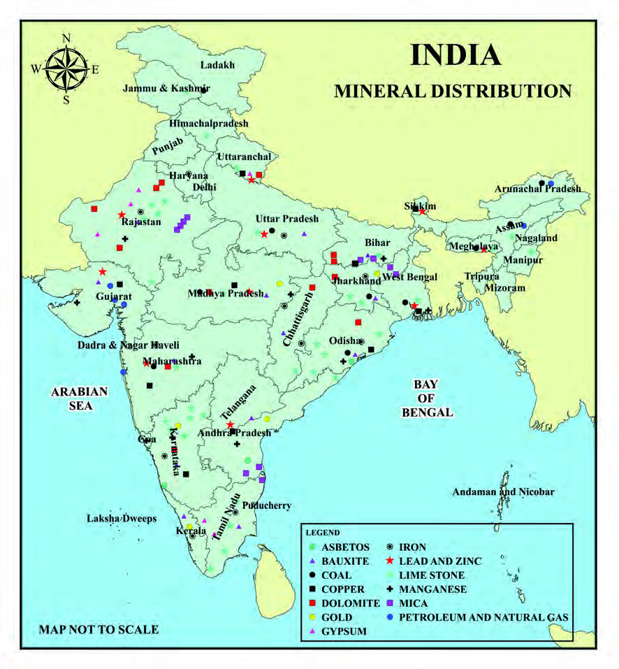

74
Part I
Social Science II
Prepare a map showing the distribution of major minerals
and incorporate in My Own Atlas.
Fig 3.20
Page 75
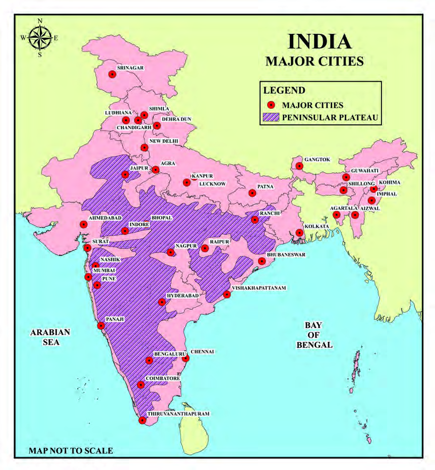

75
Plateau where the earth’s history slumbers
Standard IX
Life in Peninsular Plateau
The Peninsular Plateau is moderately populated. In the earlier stages,
human settlements in the Peninsular Plateau were limited due to non-arable
topography and continental climate. Later, with the beginning of mining
activities, development of road-rail network and emergence of mineral-
based industries, people were attracted to the plateau. Scope of commercial
agriculture based on irrigation and technological possibilities also led to an
increase in population here.
Gradually the state capitals as well as the mining and industrial centres grew
into larger urban centres.
Fig 3.21
Page 76


76
Part I
Social Science II
1. Mark and label the major mountain ranges, hills and
plateau regions of the Peninsular Plateau in a map and
prepare a chart.
2. Prepare a map showing the major rivers of the Peninsular
Plateau and display it in the class room.
3. Mark the major mining regions of the Peninsular
Plateau in a map with appropriate symbols and display in
the Social Science Lab.
4. Find out the major industries in the Peninsular Plateau
and analyse the role of mineral resources and agriculture
in their distribution pattern.
Peninsular Plateau is a perfect example for the human effort
overcoming the physical obstacles through human resource
development, thus making impossible things possible.
Extended activities
Identify the major metropolitan cities in the Peninsular
Plateau from the given map ( Fig. 3.21).
Mark and label the major cities in the map and incorporate
in My Own Atlas.